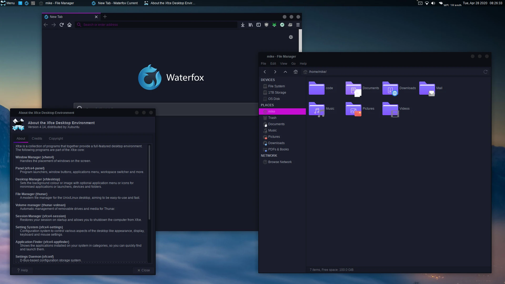
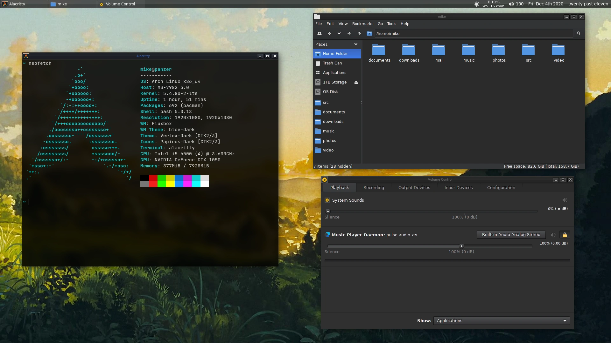
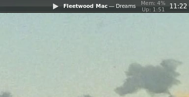

Switching to Arch
2020-12-04
Around this time last year (a bit earlier actually - October or so) I decided to make the switch to using a Linux distribution as my daily driver (while also dual-booting Windows). Just like everyone else, I distrohopped until I found the distro that I felt was “just right”. I settled on Xubuntu - a nice flavour of Ubuntu that runs the good ol’ XFCE4 desktop environment. It just seemed like a nice, fairly snappy operating system. Below is a screenshot of what my system looked like from about April to around last week:

So yeah. It looked nice and all for a while, but recently I was getting sick of it. I decided it was time to switch to Arch.
I had used Arch for the past year or so on an old laptop of mine (this same laptop is where I had installed Ubuntu for the first time years ago!). I had played around with Arch occasionally, and I thought it seemed like a really cool and extensible distribution. I felt like I had loads more flexibility, and that I knew the system better because I had installed everything on it myself from the ground-up.
So, last weekend I got my desktop prepared for a new install of Arch (cleaned up file/directory structure) and put the ISO on a trusty USB. I went ahead with the install - it took me two attempts ‘till I got a functioning system. It seemed like the latest 5.9 kernel just doesn't like my hardware or something. The second time around I went with the LTS kernel, and all went well.
I booted into my new system, and installed whatever essential packages I needed (i.e Neovim, etc). I had decided beforehand that I'd go with Openbox as my window manager, so that's what I installed and ran initially. I had played around with it, got the basic things configured. However, I soon discovered that Openbox does not have the ability to “hide window contents while dragging windows” (see here, things haven't changed since then apparently). It's a really small feature, but something I really wanted to have, as it just makes the system feel so much snappier!
Nevertheless, I discovered quickly that the Fluxbox window manager actually supports this feature. I had basically never used Fluxbox before (maybe once or twice as a test), but decided to give it a shot anyway. And boy, I'm glad I did! Fluxbox's man pages are pretty comprehensive (thank god, there isn't much online resources unfortunately), so I was able to get it configured fairly quickly.
I was very impressed with how customisable and simple Fluxbox actually is. It was basically just what I had been looking for. I was able to adjust it to suit my workflow, using some keybinds such as the following:
# Close window
Mod4 Q :Close
# Make window fullscreen
Mod1 F11 :Fullscreen
# Tile window vertically to the left/right.
Mod4 Left :MacroCmd {ResizeTo 50% 100%} {MoveTo 0% 0% TopLeft}
Mod4 Right :MacroCmd {ResizeTo 50% 100%} {MoveTo 0% 0% TopRight}
# Maximise window
Mod4 Up :Maximize
# Restore window if maximised, minimise it if restored.
# The call to 'Maximize' here is a hack that is used to actually
# 'Restore' the maximised window, since there doesn't seem to be
# any 'Restore' command (at least not in the build of Fluxbox
# that is in the Arch repos).
Mod4 Down :If {Matches (Maximized=yes)} {Maximize} {Minimize}
# Launch script that moves window to other monitor:
# See my dotfiles for the script, I can't find the original author:
# https://github.com/mikejzx/dotfiles
Mod1 Shift N :Exec $HOME/src/scripts/misc/move-to-next-monitor.sh
# A pretty cool command that tiles windows in master/slave format.
Mod4 A :If {Matches (Layer!=Desktop)} {ArrangeWindowsStackRight (Name!=tint2)}
# Launch Rofi to search for programs.
Mod4 S :Exec rofi -show combi -combi-modi "drun,run" -modi combi
So yeah. Those are the main window management keybinds that I'm using, and they get the job done great. I haven't tinkered with workspaces yet, since they seem a bit awkward to use on a dual-monitor setup with a floating window manager. Maybe in future I'll try work something out.
After getting Fluxbox (and everything else on the system) configured, it was time to theme the damn thing! I had initially been using the ‘bloe’ theme that came with Fluxbox, since I thought it actually looked decent, and sort of retro-ey. Thing is, I just wanted a dark version of it!
Well, I decided to go ahead and make my own dark version of it. I mean, it took some tweaking, but eventually I was able to get something that I was actually pleased with. I only ended up editing the pixmaps that I was actually using, so that is - close/restore/minimise buttons, window titlebars, etc.
I had to find a GTK theme that went well the Fluxbox theme. Man, it was a pain in the ass, but I did eventually discover a theme called ‘Vertex’, which I think worked well with it. I did just slightly modify the colours of the toolbar/window menus of GTK2 windows, and also removed all ‘transitions’ that I could find - since I don't like them very much.
Finally, I had to get my panel configured. I had installed Tint2 pretty early on, while I was experimenting with Openbox, and yeah it's pretty awesome. I was able to configure it pretty much just how I wanted. The other day I even put this crazy gradient on it, which when paired with a blur effect (thanks to Tryone144's fork of the Picom compositor), made it look a bit like the Windows Vista taskbar. I mean, I wasn't trying to mimick it really, but I think it goes quite well with the rest of the theme. I guess it can be considered a bit of a “retro” look now, since interfaces haven't had that sort of thing in years. Here's the gradient I used to achieve it:
gradient = vertical
start_color = #404040 55
color_stop = 50.000000 #4a4a4a 55
color_stop = 52.000000 #0c0c0c 30
color_stop = 93.000000 #0a0a0a 30
color_stop = 94.000000 #ffffff 10
color_stop = 96.000000 #ffffff 10
color_stop = 98.000000 #000000 100
end_color = #000000 100
And here's the resulting desktop. A bit of a throwback to the late 2000s days of computing I guess. It definitely won't suit everyone's tastes, but it suits mine!

Oh, and I just thought this was really cool too - this is from the Tint2 panel on my left monitor. Got a nice MPD status display there with a play/pause icon! Of course clicking it also runs mpc toggle.

And that's it. As of now, I've put my dotfiles on GitHub here for my own sake really, but if you're interested or were wondering how I did something, feel free to take a look - most of it should be there.